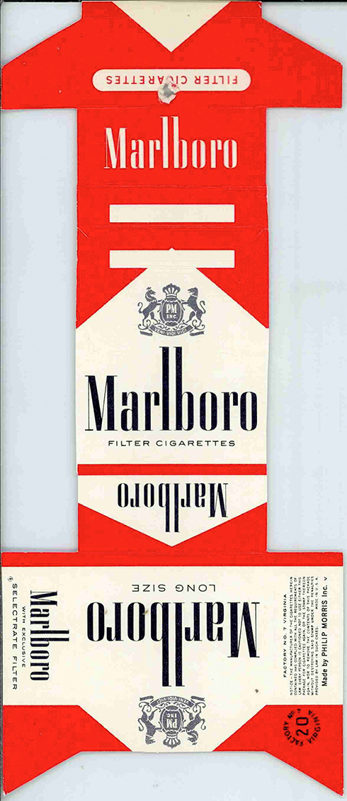
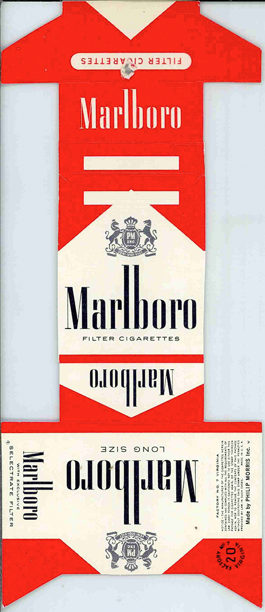

Mobile Phone Advertising Images & Just Product Images in the 1990s - early 2000s
Before all phones, including the iPhone, had the same design and functionality, the mobile phone market was full of fun and vitality. I don't know if I thought it would sell or if it sold well at the time, but all kinds of designs came out. I didn't live in this era, but I miss it.

Nokia 7250 Ad poster. The image of the eyes was used to emphasize the camera function.

Samsung A400 Ad poster. The cell phone is so pretty that you cut my hair like that to show you... a deranged idea

Advertisement image for HYPERMOTO by Motorola. Trends also go round and round. Super cool.
Samsung DigitAll expression. It boasts a vivid color screen in it. Then, why is she wearing ski goggles?
The Galaxy Fold's Very Far Ancestral.....

Kool style...

The graphic that highlights the selfie function on the cell phone is cool. The tone and manner of the picture is perfect, too. As expected, trends go round and round and round and round and round and round.

Can I call it cellphone?
Graphics and photos that feel the romance of the time are impressive.
I think the era before the appearance of smartphones has reached the peak of creativity. Everyone's little crazy(in a good way)......
The evolution from brick to cellphone.

That big plastic brick was the same price as iPhone 14 Pro Max. Do you believe it?
Music Making with Computers in 80-90s
The history of electronic music dates back to the 1960s, but the history of making music using personal computers is shorter than expected. The images below are the images of primitive composition programs in the 8-90s after computers reflecting the GUI were widely distributed. I heard Radiohead used those programs when he made the "OK Computer" album, and maybe that's why the music is so cool.


Early Packaging and Graphics of Marlboro
It would be cool people to inspire romance into useless cigarettes, but those cool people pay attention to the graphic of cigarette packs. In those days when I didn't care about the harm of cigarettes, cigarettes were a fashion item.
 


Identity Design of Glasgow Airport and... Off-White
Looking at the identity design of Glasgow Airport, there is something that comes to mind. Maybe we're all thinking the same thing. An airport official once sued Virgil Abloh as if he thought so.


Military Parades of DPRK
The poor people of the north have become puppets of a vicious dictator who loves Emmental Cheese very much.


Various Images of Earth
From strange maps drawn by strange people who believe that the earth is flat, we have collected images of the earth in various shapes. Sometimes I can't believe we live in a place like this.

Identity Design of Mexico '66 Olympic Games
I don't think it was intended to be like that, but if a drunk audience listens to psychedelic music, this image will appear. The 1966 Mexico Olympics was the most insane and hippie-like Olympic design.


Radiation Calculation Equipments from the 60s
Graphics that appear by mathematical needs are always interesting. So if you turn that around, you can get the value you want. I don't know, but it's cool.


Original Themes of Windows 98
There was a time when Microsoft, which seemed hard, boring, and frustrating, was also cool. You can see the basic themes of Windows from the bottom of the world created by IT nerds. When I was young, the computer I had at home was using the Windows 98 operating system, and I remember it was a little scary at the time.
Underwater Theme! The fish on the screen actually moved.
Look at the style of the typeface that doesn't give a shit of the readability! Microsoft was really cool back then.

The colors, and the graphics..! It's my favorite.